図解：Les XX ― レ・ヴァン
レ・ヴァンの成立と展開
- 1835〜
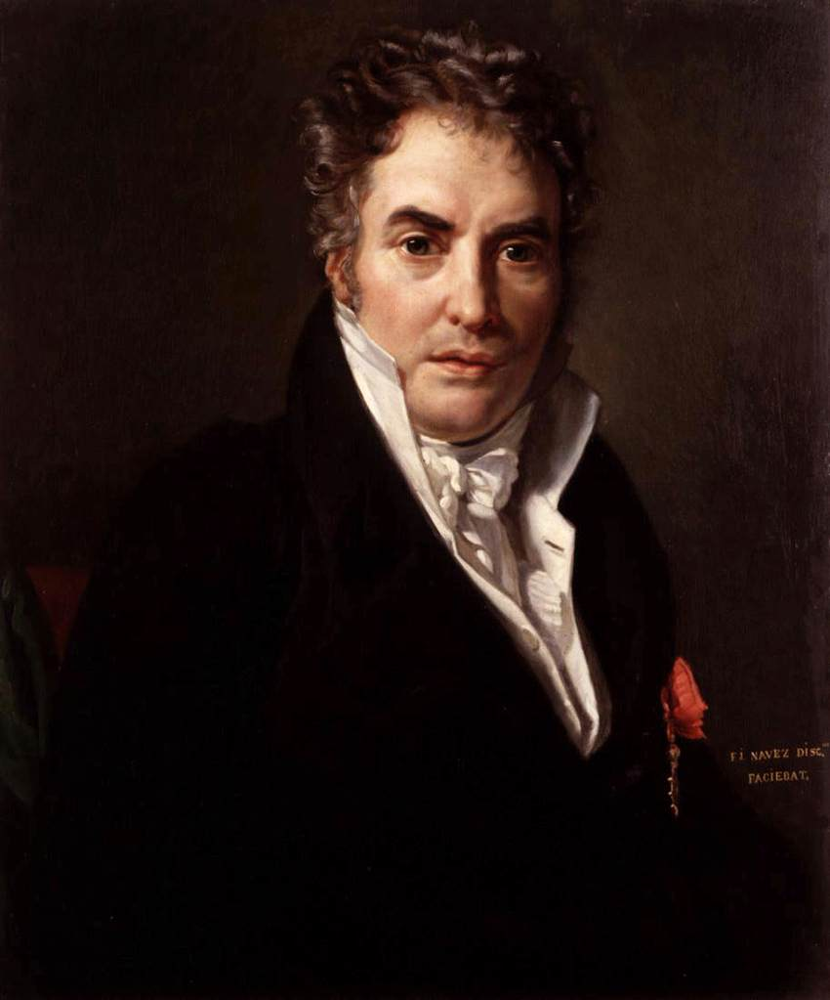
保守的アカデミーナヴェの新古典主義
独立後も根強い - 1851〜

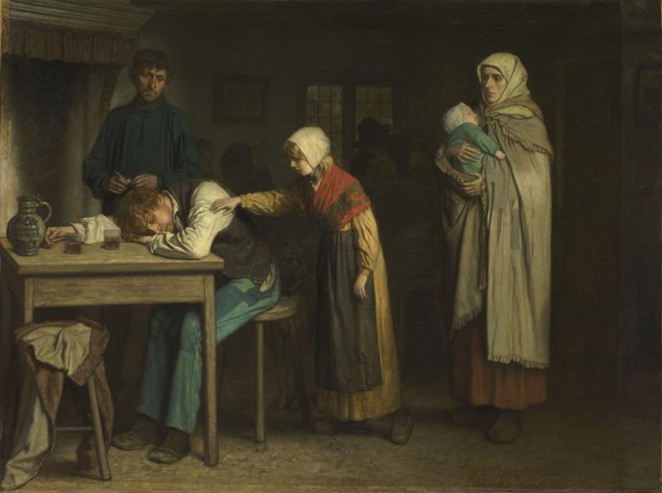
クールベの衝撃《石割人夫》が衝撃
自由美術協会が誕生 - 1883
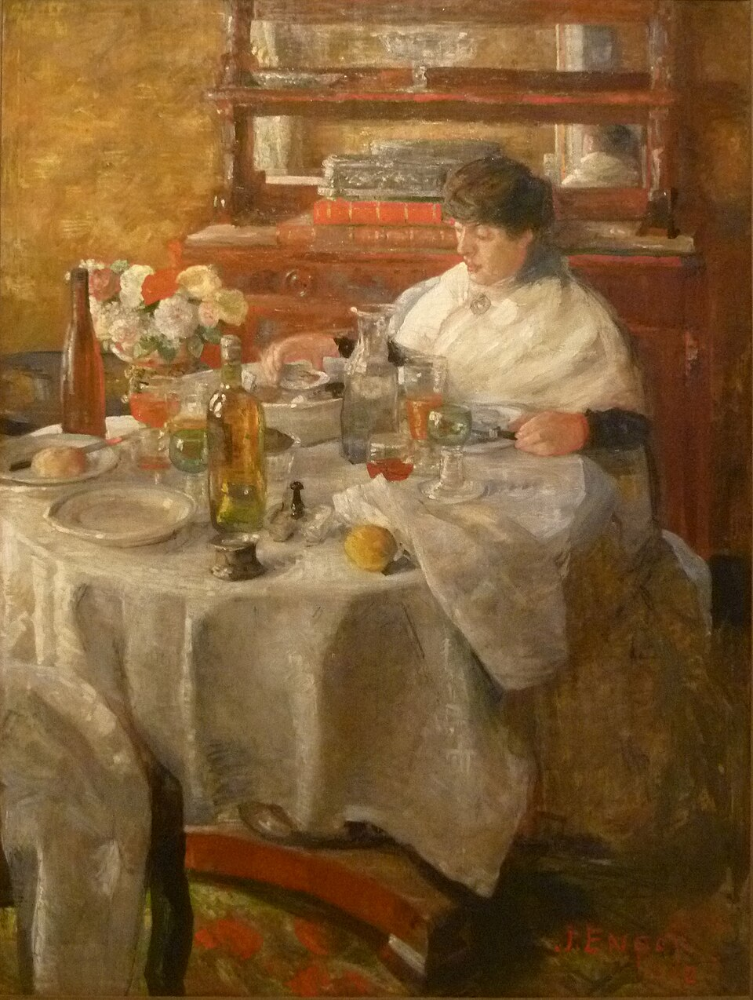
レ・ヴァン結成アンソール拒絶に反発
モースが支える - 1884〜93

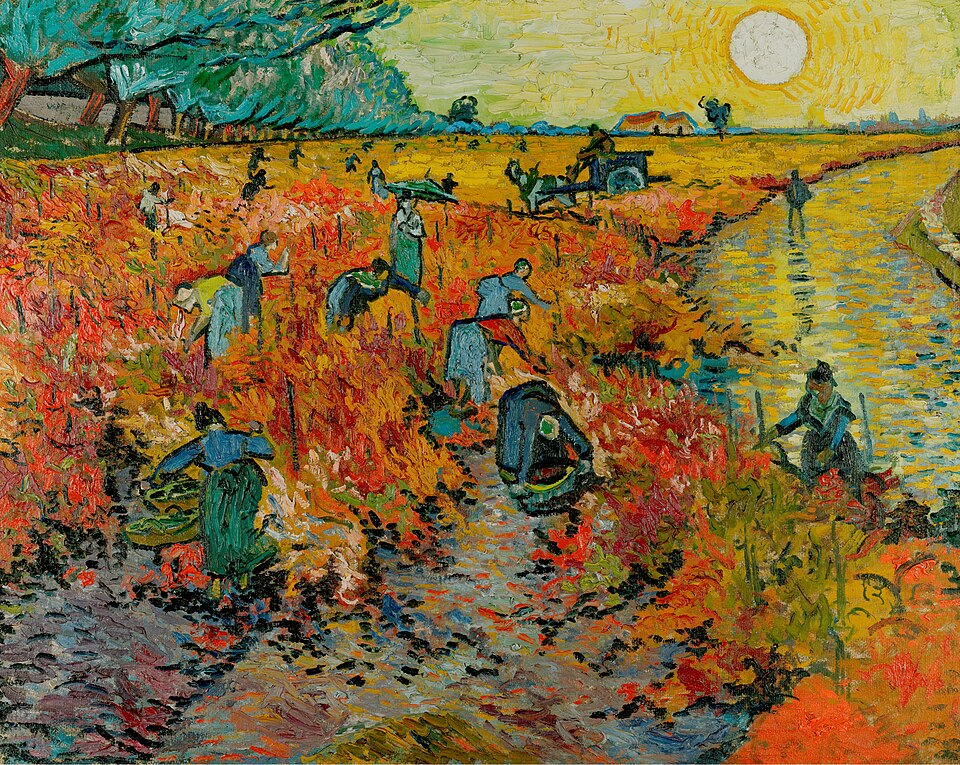
国際的な年次展外国の前衛も招く
点描めぐり対立 - 1894〜1914
 モースの新団体毎年ゲストを招く
モースの新団体毎年ゲストを招く
1914年まで続く
公式サロン・レソールと何が違うか
図版の出典
- 《画家ルイ・ダヴィッドの肖像》フランソワ＝ジョゼフ・ナヴェ：出典（Public domain / PD-Art / PDM）
- 《石割人夫》ギュスターヴ・クールベ：出典（Public domain / PD-Art / PDM）
- 《酒場の情景（酒飲み）》シャルル・ド・グルー：出典（Public domain / PD-Art / PDM）
- 《牡蠣を食べる女》ジェームズ・アンソール：出典（CC BY 4.0（原作品PD／PD-Art併記））
- 《グランド・ジャット島の日曜日の午後》ジョルジュ・スーラ：出典（Public domain / PD-Art / PDM）
- 《赤い葡萄畑》フィンセント・ファン・ゴッホ：出典（Public domain / PD-Art / PDM）
- 《マナオ・トゥパパウ（死霊が見ている）》ポール・ゴーギャン：出典（Public domain / PD-Art / PDM）
重要人物
結成を支えた人
レ・ヴァンの画家
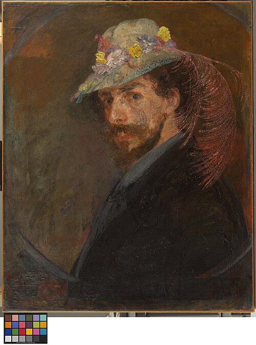
ジェームズ・アンソール画家《牡蠣を食べる女》の拒絶が結成の契機。点描に反対- クノップフ画家写実的な画風で神秘的な世界を描く
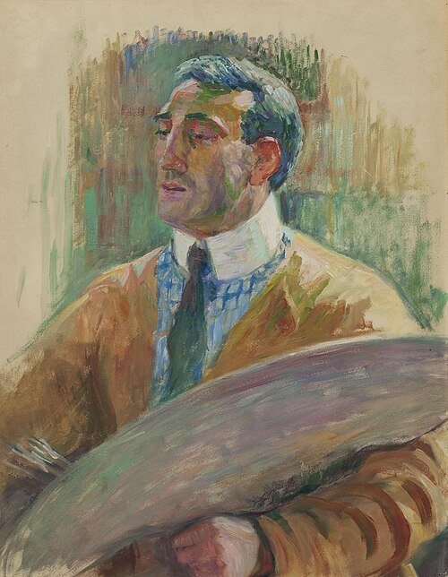
ファン・レイセルベルヘ画家結成に加わる。スーラに反応し点描へ転じる- ウィリアム・フィンチ画家結成に加わる。点描をすぐ取り入れる
 アンリ・ヴァン・デ・ヴェルデ画家・建築家途中から参加。後に建築やデザインでも活躍
アンリ・ヴァン・デ・ヴェルデ画家・建築家途中から参加。後に建築やデザインでも活躍- ヤン・トーロップ画家途中から参加。後にアール・ヌーヴォーにつながる
- アンリ・ド・グルー画家1890年、ゴッホの作品を罵倒して退会
招かれた外国の画家
 スーラ新印象派1887年の第4回展に《グランド・ジャット島》
スーラ新印象派1887年の第4回展に《グランド・ジャット島》 ゴッホポスト印象主義出品した《赤い葡萄畑》をアンナ・ボックが購入
ゴッホポスト印象主義出品した《赤い葡萄畑》をアンナ・ボックが購入- ロートレック画家ゴッホの友人。ド・グルーの罵倒に激怒
 ゴーギャン画家パリで評価が不十分だった作品が紹介される
ゴーギャン画家パリで評価が不十分だった作品が紹介される
前史の画家
- フランソワ＝ジョゼフ・ナヴェアカデミー校長ダヴィッドの弟子。素描重視の厳格なアカデミスム
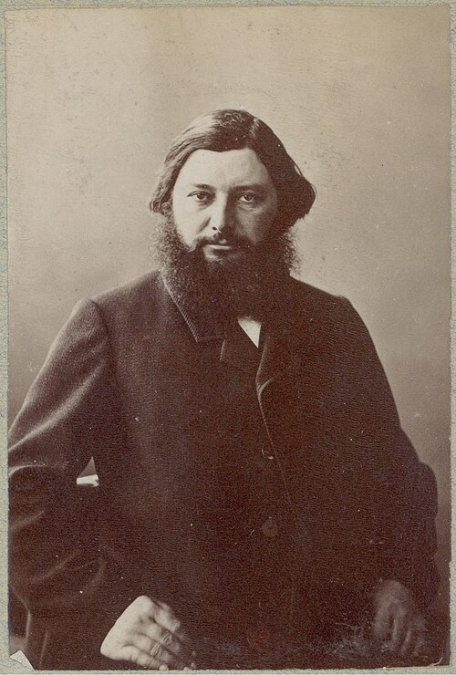
クールベフランスの画家《石割人夫》で衝撃。自由美術協会の名誉会員- シャルル・ド・グルー画家クールベに学び、ベルギーのレアリスムの先駆けに
肖像・図版の出典
- 《オクターヴ・モースの肖像》テオ・ファン・レイセルベルヘ、1885年頃：出典（Public domain）
- 《花帽子の自画像》ジェームズ・アンソール、1883年、ムゼー（オーステンデ）：出典（CC0）
- 《パレットを持つ自画像》テオ・ファン・レイセルベルヘ：出典（Public domain）
- 書斎のアンリ・ヴァン・デ・ヴェルデの写真、1908年、撮影者不明：出典（Public domain）
- ジョルジュ・スーラの写真、1888年、撮影者不明：出典（Public domain）
- 《自画像》フィンセント・ファン・ゴッホ、1887年、シカゴ美術館：出典（Public domain）
- 《黄色いキリストのある自画像》ポール・ゴーギャン、1890～1891年、オルセー美術館：出典（Public domain）
- ギュスターヴ・クールベの写真、ナダール工房、1860年代、フランス国立図書館：出典（Public domain）
ベルギー美術の成り立ち
レ・ヴァンとベルギーの前衛芸術
動画 0:52～レ・ヴァン（Les XX）は、19世紀末のブリュッセルで結成された前衛芸術家集団です。毎年、独立した展覧会を開き、国際的な前衛芸術の動向を紹介する舞台となりました。画家として出発し、後に建築やデザインでも活躍したアンリ・ヴァン・デ・ヴェルデも参加しています。アール・ヌーヴォーからモダニズムへの橋渡しとなった人物です。
中心となったアンソール、クノップフ、ファン・レイセルベルヘ、ストリドンク、ウィリアム・フィンチらは、ベルギー近代美術の先駆者として評価されています。アンソールとクノップフは、現実を写すだけでなく内面の世界を描いた、象徴主義にも欠かせない画家です。こうした画家たちの活動の背景には、フランスなどと同様に、アカデミーの保守性への抵抗がありました。
フランドル美術とネーデルラントの分裂
動画 2:15～ベルギーが独立国家として成立したのは1830年代です。イギリス、フランス、ドイツ、オランダという大国に近い位置にあり、周辺の動乱に巻き込まれながら独立を勝ち取りました。ただし、この地域の美術の歴史ははるかに古く、主に北部に当たるフランドルでは、15世紀の北方ルネサンスにヤン・ファン・エイクやファン・デル・ウェイデンらが活躍しています。絵具に用いる油が得られやすかったことも背景に、ファン・エイクらの技術革新によって、イタリアに先駆けて油彩の技法が発展・確立し、細密な描写が得意とされました。
16世紀半ば、オランダ、ベルギー、ルクセンブルクなどのネーデルラントは、スペインのハプスブルク家の支配下にありました。ハプスブルク家は神聖ローマ帝国やスペインを治める強い勢力でしたが、重税とカトリックへの統一の強制に対し、特にプロテスタントの広まっていた北部で不満が高まります。民衆が蜂起し、八十年戦争を経て北部は独立、南部はスペインの支配に残りました。
この違いは、17世紀のバロック美術にも表れます。プロテスタントが主流の北部では、宗教画が偶像崇拝につながるとして避けられるようになり、レンブラントやフェルメールに代表される肖像画、風俗画が発展しました。一方、カトリックが主流の南部では、対抗宗教改革の影響で大規模な宗教画が制作されます。
ルーベンスのアントワープと美術市場
動画 4:05～南部で絶大な影響力を持ったのがルーベンスでした。スペイン領ネーデルラントの行政の中心はブリュッセルでしたが、彼は故郷のアントワープに工房を構えることにこだわります。宮廷画家に任命されながら、希望どおりアントワープを拠点にすることを許されました。それほど高く評価されていたのです。ルーベンスの存在により、芸術の中心もブリュッセルではなくアントワープとなりました。
筆頭弟子とされ、後にイングランドの宮廷画家を務めたヴァン・ダイク、日常の生き生きした光景を描いたヨルダーンス、動物を得意としたスナイデルスらも、この都市で生まれ、ルーベンスの影響の下で独自の表現を確立しました。聖ルカ組合という画家のギルドを通じて、ルーベンスは他国で学んだ知識や技術を後世へ伝えました。自分の作品だけでなく、地域の画家たちの基盤を作った点にも功績があります。
1640年代にルーベンス、ヴァン・ダイクという巨匠が相次いで亡くなります。同じ頃、アムステルダムは経済都市として成熟し、オランダ黄金時代の代表的な絵画も多く登場しました。ベルギーの一時代の終わりと、オランダの新しい美術市場の台頭を象徴する変化です。ただし、オランダも「最悪の年」と呼ばれる1672年以降、美術市場の停滞を迎えます。市場が移る中、17世紀後半のベルギーでは、収集家の需要に応えるニッチなジャンルに特化する画家も現れました。
 画像を拡大 ＋
画像を拡大 ＋
《夜警》
- 作者
- レンブラント・ファン・レイン
- 制作時期
- 1642年
- 所在地・所蔵
- アムステルダム国立美術館
- 素材・形式
- 油彩・カンヴァス
- 原題
- De Nachtwacht
出典・画像について

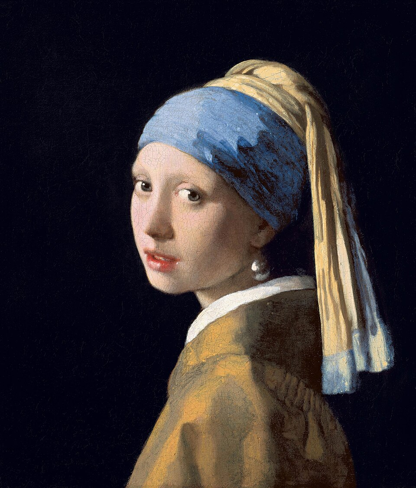
画像を拡大 ＋《真珠の耳飾りの少女》
- 作者
- ヨハネス・フェルメール
- 制作時期
- 1665年頃
- 所在地・所蔵
- マウリッツハイス美術館、デン・ハーグ（670）
- 素材・形式
- 油彩・カンヴァス
- 原題
- Meisje met de parel
- 動画の年代
- 1665年
出典・画像について

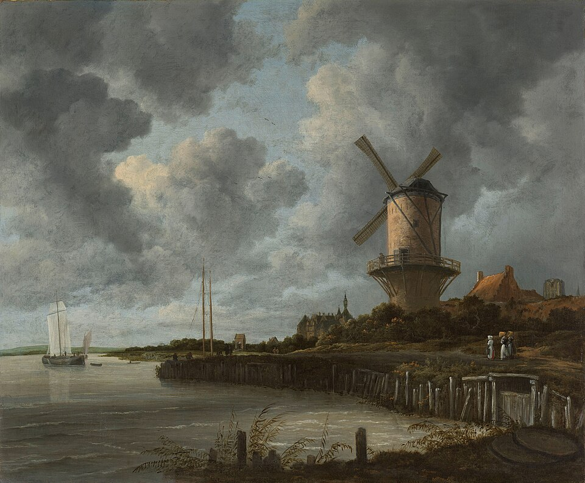
画像を拡大 ＋《ヴェイク・バイ・ドゥールステーデの風車》
- 作者
- ヤーコプ・ファン・ロイスダール
- 制作時期
- 1668～1670年頃
- 所在地・所蔵
- アムステルダム国立美術館（SK-C-211）
- 素材・形式
- 油彩・カンヴァス
- 原題
- De molen bij Wijk bij Duurstede
- 動画の年代
- 1670年
出典・画像について

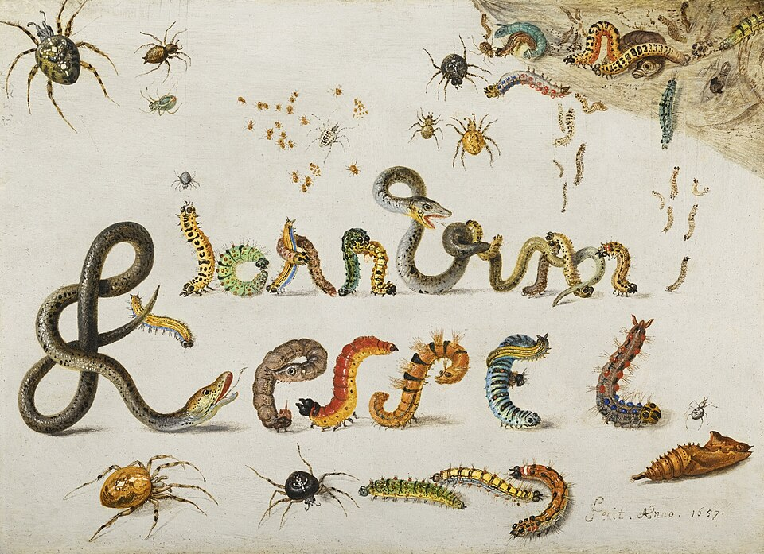
画像を拡大 ＋《庭や家のクモと草ヘビ、イモムシが絡み合って画家の名前を綴る》
- 作者
- ヤン・ファン・ケッセル（父）
- 制作時期
- 1657年
- 所在地・所蔵
- 個人蔵
- 素材・形式
- 油彩・銅板
- 原題
- Garden and house spiders with grass snakes and caterpillars contorted and entwined to spell the artist's name
出典・画像について
一部のCommons記録に1557年と誤記があります。画面・作品の署名・競売記録の1657年を採用。
画像出典：Jan van Kessel the Elder
Public domain / PD-Art / PDM
作品情報：作品・画像・利用条件
統治の変化とアカデミー
オーストリア統治からベルギー独立へ
動画 5:58～18世紀初頭、後継者を残さず亡くなったスペイン王カルロス2世の王位をめぐり、スペイン継承戦争が起こります。その結果、ベルギーの統治はスペインのハプスブルク家から、オーストリアのハプスブルク家へ移りました。オーストリアの統治者マリア・テレジアと、ベルギーの総督シャルル・ド・ロレーヌは、オーストリアで進めていた文化政策をこの地域でも行い、芸術を手厚く保護します。
美術学校を支援するだけでなく、画家を積極的にイタリアやフランスへ学びに行かせました。他国で得た知識と技術を、帰国してアカデミーで教える仕組みが整ったのです。アントワープでは従来、主に国内で技術を引き継ぎ、留学の支援は十分に発展していませんでした。この変化によって、画家たちはフランスなどから新古典主義を持ち帰ります。フランスとの芸術的な交流は活発だったようで、ナポレオンの宮廷画家として知られるダヴィッドも、ナポレオンの失脚後にブリュッセルへ亡命しました。

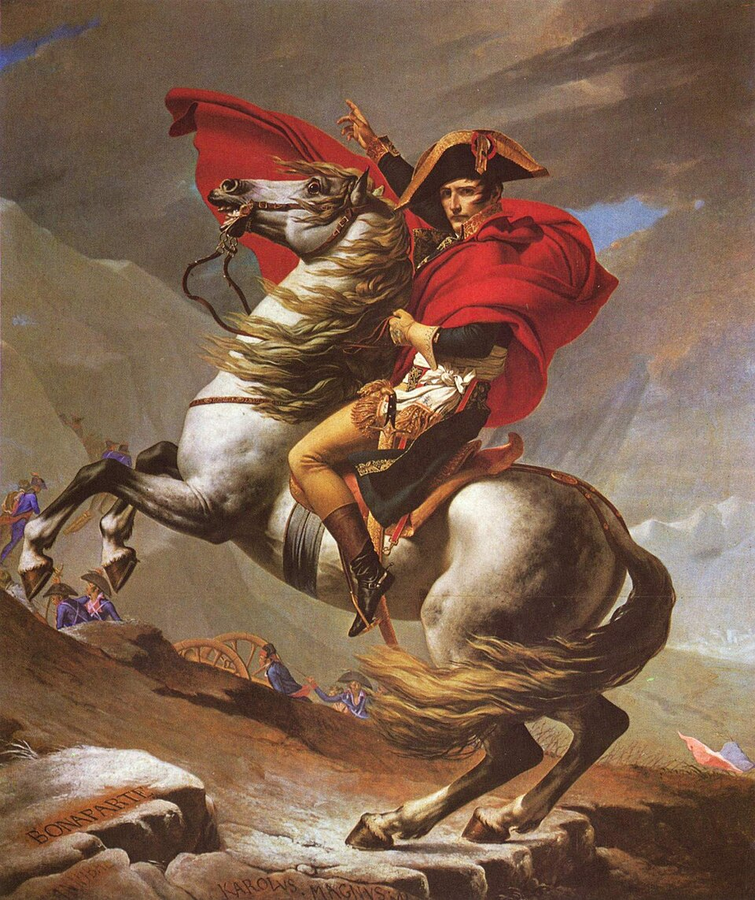
画像を拡大 ＋《サン＝ベルナール峠を越えるボナパルト（ウィーン版）》
- 作者
- ジャック＝ルイ・ダヴィッド
- 制作時期
- 1802〜1803年
- 所在地・所蔵
- ウィーン美術史美術館（GG 2342）、ベルヴェデーレ宮殿美術館に寄託
- 素材・形式
- 油彩・カンヴァス
- 原題
- Napoleon Crossing the Alps
- 動画の年代
- 1801年
出典・画像について
制作年はウィーン美術史美術館の記載による。ベルヴェデーレは1801年としている。
画像出典：Jacques-Louis David / Wikimedia Commons
Public domain (PD-Art)
作品情報：画像出典・利用条件 · 作品照合資料 · 所蔵館の作品ページ
制作メモ
馬の前脚とマントの輪郭、馬具、背景の岩の配置を動画と照合した。
1792年にフランス革命戦争が始まり、1795年にはオーストリア領だったベルギーがフランスへ併合されます。文化交流が一層活発になり、それまで一部の知識人が使っていたフランス語も、中産階級へ急速に広まりました。言葉を共有することも、フランス文化を取り入れる助けとなります。
1815年、ワーテルローの戦いでナポレオンが完全に失脚すると、ウィーン会議によってベルギーはオランダに組み込まれ、ネーデルラント連合王国となりました。しかし、すでに文化の異なる両地域の統合は、南部に受け入れられませんでした。北部のプロテスタントと南部のカトリックという宗教の違いに加え、北部のオランダ語と、南部で広まったフランス語という言語の違いも不満の背景になります。1830年に独立革命が起こり、その後、国際的に独立が認められました。独立後もフランス文化の影響は続き、アカデミーの保守的な傾向はフランスと同等か、それ以上に強く残りました。
保守的な社会と新古典主義の定着
動画 9:49～1830年代、独立したベルギーとは対照的に、フランスではアカデミーの権威が揺らいでいました。1830年の七月革命はブルボン朝を倒し、1848年の二月革命は王政を覆して共和政をもたらします。民衆・市民の運動によって貴族や教会の支配が弱まり、新興のブルジョアジーを中心とする市民階級が、新しい買い手として台頭しました。既存の権威への疑問と、従来の伝統にこだわらない買い手の登場を背景に、ロマン主義やバルビゾン派などの作品が現れたのです。
ベルギーも独立革命を成し遂げ、立憲君主制を採用しましたが、政治には制限選挙や貴族層中心の体制が残りました。フランスのような社会の変化が起こらず、保守的な美術が支持される条件が続いていました。
ナポレオン失脚後には、ダヴィッドをはじめ、フランスの画家や文化人が亡命してきました。百日天下でナポレオンを支持し、新体制下で立場が危うくなった人々です。美術のパトロン、ルイ・フレミエや、フランスの財務大臣を務めたラメル・ド・ノガレも含まれました。彼らが支持したのは、ナポレオン時代の新古典主義でした。巨匠ダヴィッドが来たことは、パリへ行かずに学べるという点でも、ベルギーの芸術界に大きな刺激を与えます。
代表的な弟子フランソワ＝ジョゼフ・ナヴェは、ナポレオン失脚以前からパリでダヴィッドに学び、その亡命に伴ってブリュッセルへ戻って師事しました。1835年から1862年までブリュッセル王立美術アカデミーの校長を務め、素描を重視する厳格なアカデミスムを教えます。フランスではややマンネリ化していた新古典主義も、ルーベンスの大胆な構図や色彩の伝統が根強いベルギーでは、比較的新鮮に受け取られました。政治を担う層にも、社会秩序を維持する安定した表現として支持されたのです。

《画家ルイ・ダヴィッドの肖像》
- 作者
- フランソワ＝ジョゼフ・ナヴェ
- 制作時期
- 1817年
- 所在地・所蔵
- ベルギー王立美術館、ブリュッセル（3262）
- 素材・形式
- 油彩・板
- 原題
- Portrait du peintre Louis David
出典・画像について
レアリスムと独立した発表の場
クールベの衝撃とベルギーのレアリスム
動画 12:13～ブリュッセルでも、パリと同様にサロンが開催され、新国家の正当性を示す歴史画が奨励されました。しかし1851年、アカデミーは海外の画家を招いて作品を展示します。新興国家ベルギーの文化水準を示し、国際的な地位を高めるためでした。外国の収集家を呼び込み、自国の画家を売り出す商業的な戦略でもあります。
そのサロンでスキャンダルを起こしたのが、フランスのクールベの《石割人夫》です。それまで偉人や神話にふさわしいとされた大画面に、労働者を描きました。フランスでも物議を醸した作品は、ベルギーでも賛否両論を巻き起こし、若い画家たちに衝撃を与えます。
画像を拡大 ＋
《石割人夫》
- 作者
- ギュスターヴ・クールベ
- 制作時期
- 1849年
- 所在地・所蔵
- 旧ドレスデン絵画館所蔵、1945年に戦災で消失
- 素材・形式
- 油彩・カンヴァス
- 原題
- Les Casseurs de pierres
出典・画像について
その一人がシャルル・ド・グルーでした。ナヴェから新古典主義を学んでいましたが、クールベとの出会いを転機に、下層階級の苦境、貧困、アルコール依存、疾病といった、当時のベルギーで問題となりながら見過ごされていた主題へ向かいます。理想化せず、見たものを淡々と描く姿勢を学び、ベルギーのレアリスム運動の先駆けとなりました。

《酒場の情景（酒飲み）》
- 作者
- シャルル・ド・グルー
- 制作時期
- 1855～1857年
- 所在地・所蔵
- オルセー美術館、パリ（RF199218）
- 素材・形式
- 油彩・カンヴァス
- 原題
- Scène de cabaret
出典・画像について
自由美術協会とレソール
動画 13:54～バルビゾン派の影響を受け、ブリュッセル近郊に滞在したテルヴューレン派のカミーユ・ヴァン・カンプや、フランスでアカデミスムを学びながら反発したルイ・デュボアも、レアリスムを担いました。彼らを中心に、1868年、自由美術協会（ソシエテ・リーブル・デ・ボザール）が設立されます。既存のサロンから独立した展覧会や、芸術理論を広める刊行物を通じて、精力的に活動しました。

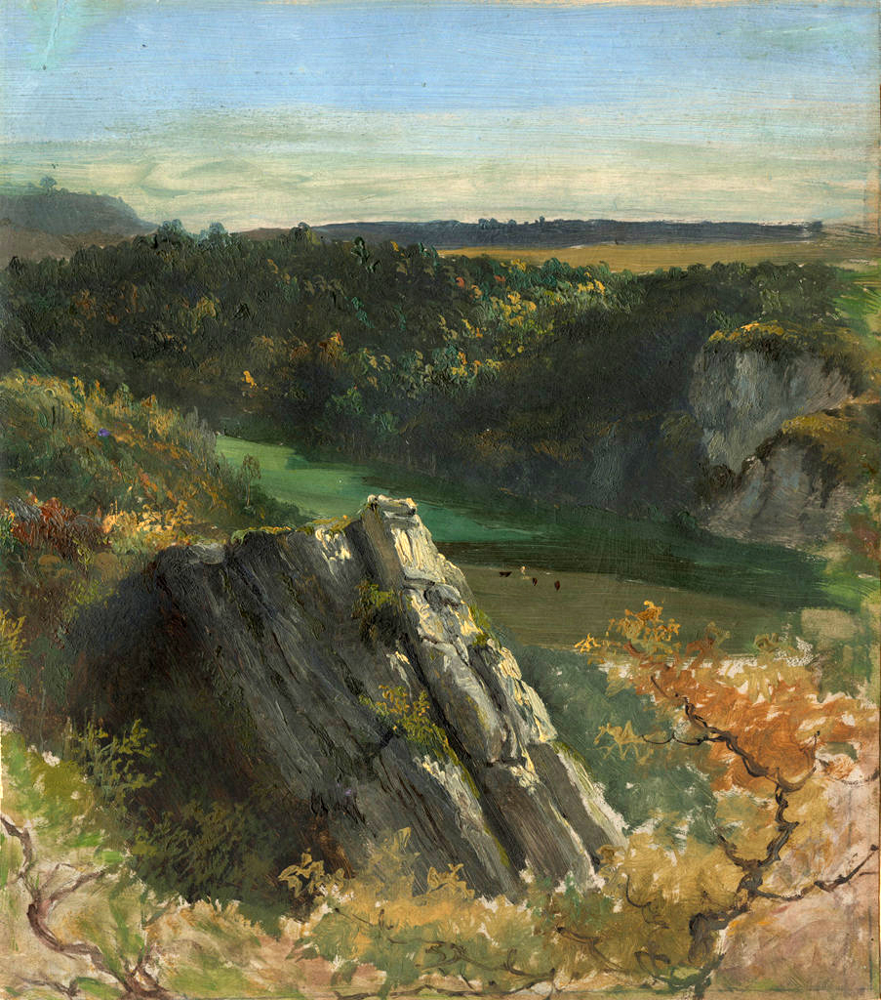
画像を拡大 ＋《岩の風景》
- 作者
- カミーユ・ヴァン・カンプ
- 制作時期
- 1860年
- 所在地・所蔵
- 現所蔵先未確認（画廊提供画像）
- 素材・形式
- 絵画
- 原題
- Rocky Landscape
出典・画像について
現所蔵先は確認できていません。
画像出典：Camille Van Camp (1834-1891)
Public domain / PD-Art / PDM
作品情報：作品・画像・利用条件
制作メモ
作者・作品・1860年は図柄と画像記録で照合。

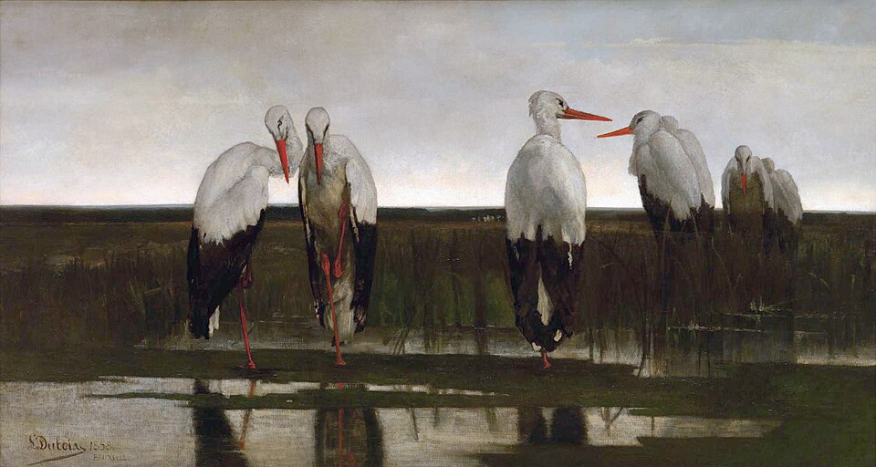
画像を拡大 ＋《コウノトリ》
- 作者
- ルイ・デュボア
- 制作時期
- 1858年
- 所在地・所蔵
- ベルギー王立美術館、ブリュッセル（2807）
- 素材・形式
- 油彩・カンヴァス
- 原題
- Les cigognes
- 動画の年代
- 1857年
出典・画像について
協会はクールベを名誉会員に迎え、反アカデミスムと自由な芸術の象徴にしました。1855年にサロンへ反発して個展を開いた彼の活動を、集団へ広げたような運動です。1876年に解散するまでの8年間で価値観を変え、レアリスムの作品が公式サロンにも展示されるようになります。コンスタンタン・ムーニエのように、労働者を芸術の中心へ据える作品も現れました。見たものを淡々と描く姿勢が社会問題を取り上げることにつながり、産業化や社会変動への応答が、反アカデミスムと結び付いていったのです。従来の理想化された様式に代わる、新しい芸術のあり方が広まっていきました。

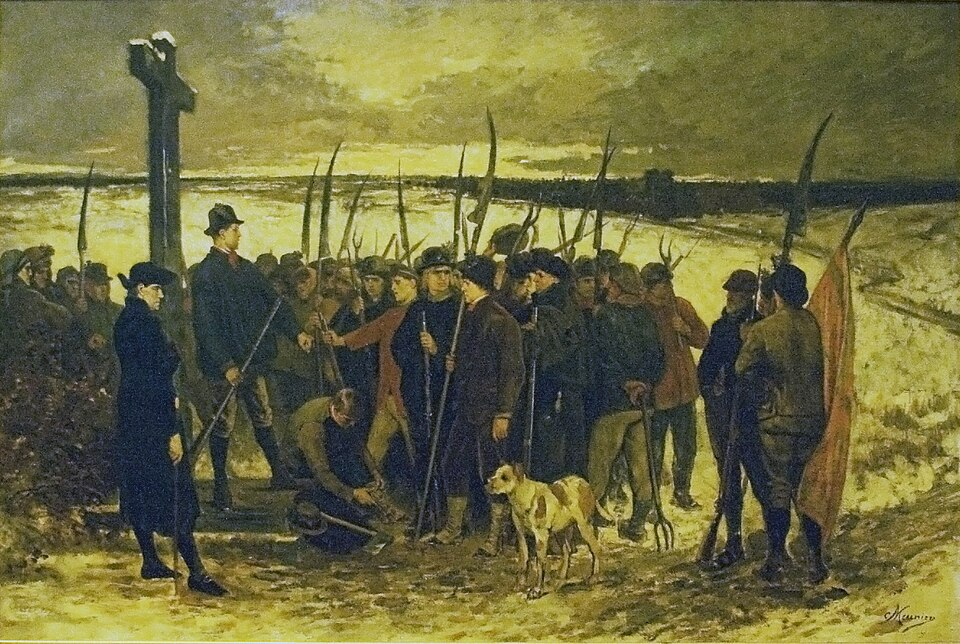
画像を拡大 ＋《農民戦争―集合》
- 作者
- コンスタンタン・ムーニエ
- 制作時期
- 1875年
- 所在地・所蔵
- ムーニエ美術館、ブリュッセル（ベルギー王立美術館、11542）
- 素材・形式
- 油彩・カンヴァス
- 原題
- La guerre de paysans – le rassemblement
出典・画像について
労働者を描く美術の説明時に表示される図版ですが、作品自体の主題は《農民戦争―集合》です。炭鉱労働者の作品と混同しません。
画像出典：Constantin Meunier
Public domain / PD-Art / PDM
作品情報：作品・画像・利用条件
レアリスムがある程度受け入れられても、アカデミーは伝統的な規範や古典的な教育を重んじ、全面的には評価しませんでした。そこで1876年、「ブリュッセル美術アカデミーの学生と卒業生のサークル」といった意味の名を持つ団体が発足し、1879年にレソールと改称します。アカデミーに関わりながら、それに反発した集団です。設立時に20代だったルイ・カンビエ、レオン・エルボ、アンリ・ペルメケらが中心となりました。
彼らが掲げたのは「唯一の芸術、唯一の人生」という標語です。芸術は単なる技術ではなく、その人の生き方や感じ方を表すべきであり、一人ひとりの人生が異なるなら芸術も異なってよい、という考えでした。アカデミスムという様式そのものより、技術を優先する教育姿勢への反発が出発点です。個性を抑えた絵を描くことも自由ですが、それを決めるのは外部ではなく本人であるべきでした。彼らは別に展覧会を開き、様式の規範に縛られない発表の場を確保します。
レ・ヴァンの結成と作品
《牡蠣を食べる女》とレ・ヴァンの結成
動画 16:40～1883年、途中から加わったジェームズ・アンソールの《牡蠣を食べる女》が、団体内で物議を醸しました。牡蠣には媚薬的な効果があると信じられており、若い女性が一人で食べる場面が刺激的と受け取られたためだとされます。1882年のアントワープの公式サロンで拒絶され、翌年レソールへ持ち込みましたが、ここでも審査によって展示を拒まれます。

《牡蠣を食べる女》
- 作者
- ジェームズ・アンソール
- 制作時期
- 1882年
- 所在地・所蔵
- アントワープ王立美術館（2073）
- 素材・形式
- 油彩・カンヴァス
- 原題
- De oestereetster
出典・画像について
画像出典：JoJan
CC BY 4.0（原作品PD／PD-Art併記）
作品情報：作品・画像・利用条件 · 所蔵館の作品ページ
自由を掲げる前衛集団も、内部には審査員制度などの保守性を残していました。方向性を統一できていなかったともいえます。この拒絶に、クノップフ、ファン・レイセルベルヘ、ボーゲルス、ウィリアム・フィンチら、かねて保守性を嫌っていた画家たちが反発しました。公式サロンからもレソールからも離れ、完全な無審査の展覧会を開こうと結成したのが、レ・ヴァンです。
1883年、彼らをまとめて設立を支えたのは、美術評論家で弁護士のオクターヴ・モースでした。芸術家だけでは展覧会運営の経験が乏しいため、下支えと企画を担ったのです。モースは芸術の週刊誌『ラール・モデルヌ』の編集にも携わり、前衛芸術を積極的に発信していました。アンソールは1882年に同誌へ一文を書いており、この寄稿を通じたつながりも結成のきっかけとなりました。
アール・ヌーヴォーという語を広めたエドモン・ピカールも、同誌の創刊メンバーでした。モースとともに、当時のベルギーの新しい芸術を紹介し、レ・ヴァンの画家たちを支えます。目指したのは、何者にも妨げられない、完全に自由な表現の場でした。創立メンバー11人に9人を招き、20人で結成したことから、フランス語の「20」に当たるレ・ヴァンと名乗りました。
様式を統一しない国際的な展覧会
動画 19:20～メンバーに共通する様式はありませんでした。当時の先端だった印象派や新印象派を取り入れ、題材と表現を工夫します。アンソールは仮面、骸骨、カーニヴァルを用い、現代社会の虚飾や欺瞞を、風刺的・象徴的に描きました。鮮やかで華やかな色彩の中にも、不思議さや不気味さがあります。

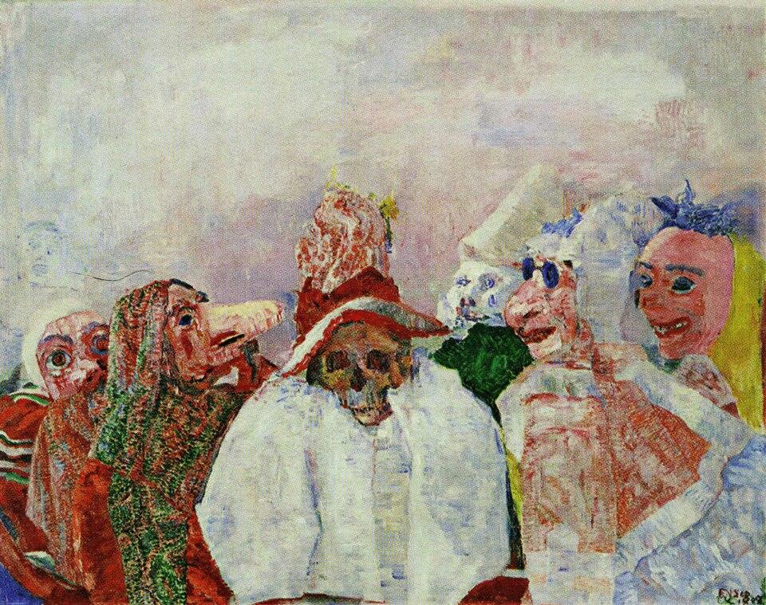
画像を拡大 ＋《死と向き合う仮面》
- 作者
- ジェームズ・アンソール
- 制作時期
- 1888年
- 所在地・所蔵
- ニューヨーク近代美術館（505.1951）
- 素材・形式
- 油彩・カンヴァス
- 原題
- Masques raillant la mort
出典・画像について
クノップフは、写実的な画風でありながら、どこか神秘的な世界を描きます。《ジャンヌ・ケフェルの肖像》は、友人の5歳の娘を描いた作品です。静かに立つ少女を、単に可愛らしい存在として表さず、こちらの内面を見透かすような、不気味さを感じさせる視線を描いています。

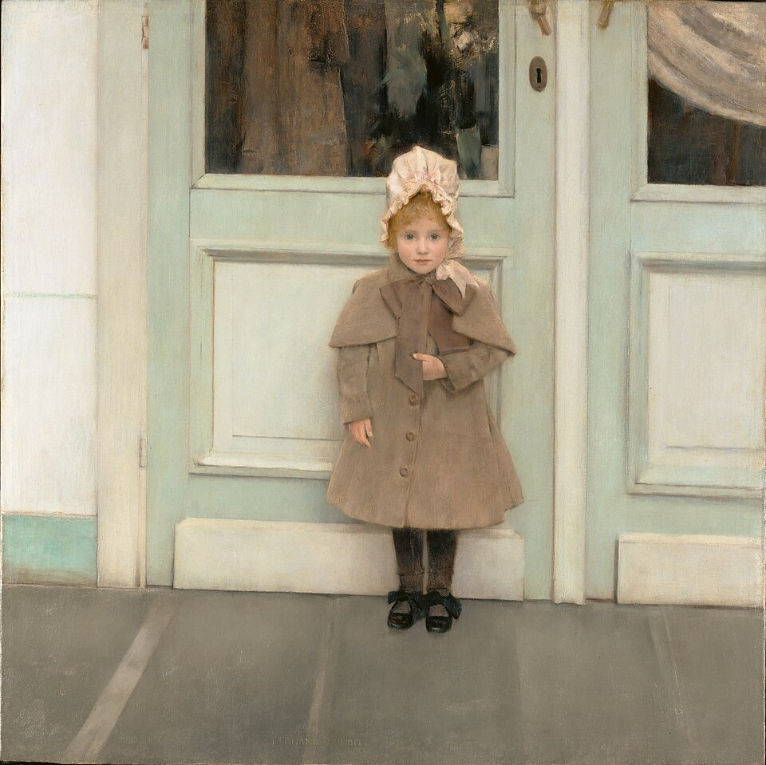
画像を拡大 ＋《ジャンヌ・ケフェル》
- 作者
- フェルナン・クノップフ
- 制作時期
- 1885年
- 所在地・所蔵
- J・ポール・ゲティ美術館、ロサンゼルス（107TN1）
- 素材・形式
- 油彩・カンヴァス
- 原題
- Jeanne Kéfer
出典・画像について
レ・ヴァンは、モネ、ルノワール、新印象派のスーラ、唯美主義のホイッスラー、ポスト印象主義のゴッホなど、外国の前衛画家も招きました。フランスで十分に評価されていない作家も積極的に受け入れます。《赤い葡萄畑》も、この展覧会に出され、ベルギーの画家で収集家のアンナ・ボックに購入されました。この作品は、ゴッホが生前に売った唯一の絵ともいわれますが、諸説あります。

《赤い葡萄畑》
- 作者
- フィンセント・ファン・ゴッホ
- 制作時期
- 1888年
- 所在地・所蔵
- プーシキン美術館、モスクワ（Ж-3372）
- 素材・形式
- 油彩・カンヴァス
- 原題
- The Red Vineyard
出典・画像について
途中からは、アンリ・ヴァン・デ・ヴェルデやヤン・トーロップも参加しました。後にアール・ヌーヴォーにつながる活動をする人々です。この時期には印象派や新印象派の影響を受けながら、それぞれの作風を築いていました。しかし、成功する一方で、内部にはレソールと同様の軋轢も生まれていきます。
入力作者トーロップは誤り。限定探索で同一図版を確保できず、1957没の原作権利も米国PD表示だけでは不足、保留。
《カルムトゥウトの庭》
- 作者
- アンリ・ヴァン・デ・ヴェルデ
- 制作時期
- 1892年（画面表記）
- 所在地・所蔵
- ノイエ・ピナコテーク、ミュンヘンとみられるが個体未確定
- 素材・形式
- 油彩・カンヴァス
- 原題
- Garden in Kalmthout
出典・画像について
アンリ・ヴァン・デ・ヴェルデの作品。隣に示されたトーロップ《白衣の女性》とは別作品。

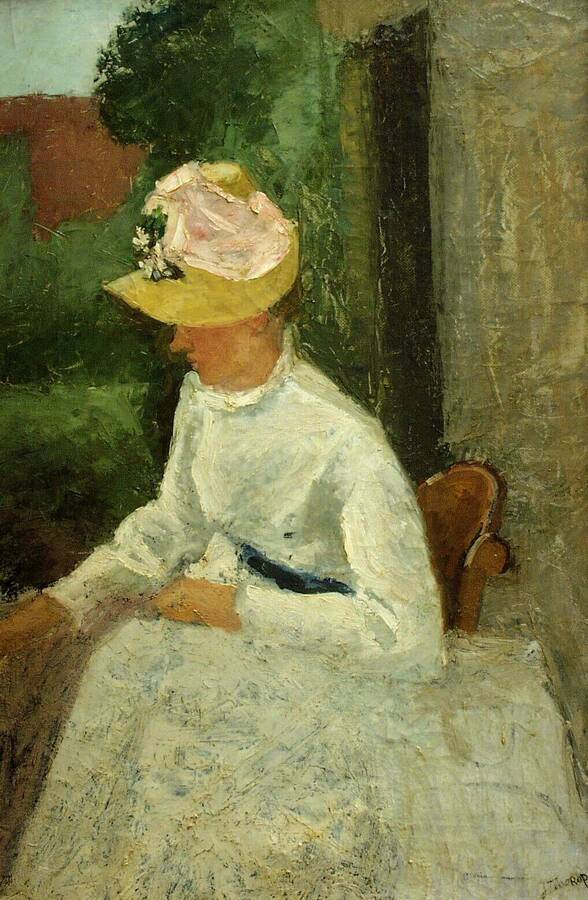
画像を拡大 ＋《白衣の女性》
- 作者
- ヤン・トーロップ
- 制作時期
- 1885～1886年
- 所在地・所蔵
- クレラー＝ミュラー美術館、オッテルロー（KM104.186）
- 素材・形式
- 油彩・カンヴァス
- 原題
- Dame in het wit
- 動画の年代
- 1886年
出典・画像について
同名のヘント所蔵の横長作品とは別の、クレラー＝ミュラー美術館所蔵の縦長作品。動画の年代表記：1886年。
画像出典：Jan Toorop
Public domain / PD-Art / PDM
作品情報：作品・画像・利用条件 · 所蔵館の作品ページ
表現の自由と内部対立
点描をめぐる対立とアンソールの孤立
動画 21:13～1887年の第4回展には、スーラの《グランド・ジャット島の日曜日の午後》が展示されました。スーラやシニャックによる革新的な点描に、ファン・レイセルベルヘ、ウィリアム・フィンチ、ヴァン・デ・ヴェルデらがすぐに反応し、自分の作品へ取り入れます。これに反対したのがアンソールでした。画一的で機械的な、同じような技法へ傾くことを批判し、点描へ転じたファン・レイセルベルヘを嘲笑したことも確認されています。技法への意見の違いは、仲間との溝を深めました。
画像を拡大 ＋
《グランド・ジャット島の日曜日の午後》
- 作者
- ジョルジュ・スーラ
- 制作時期
- 1884～1886年
- 所在地・所蔵
- シカゴ美術館（1926.224）
- 素材・形式
- 油彩・カンヴァス
- 原題
- A Sunday on La Grande Jatte — 1884
出典・画像について
翌1888年、アンソールは《1889年のキリストのブリュッセル入城》を制作します。制作年と題名の年が違うのは、1889年のレ・ヴァン展へ出すつもりだったためです。しかし、仲間の反発を受け、展示を拒絶されたとされます。キリストのエルサレム入城を、現代のブリュッセルへ置き換えた作品です。
キリストは豆粒ほどに小さく、一部の人しか見ていません。前方の群衆は見向きもせず、思い思いに振る舞っています。信仰の希薄化や、騒ぎに夢中になる現代人を痛烈に風刺した、挑発的な表現でした。その挑発性が強すぎて、レ・ヴァンの仲間にも受け入れられなかったのです。アンソールは、点描の画家たちが自分の作品を潰したと憤り、集団の中で孤立していきます。この出来事から約10年後には、仮面に囲まれた自画像も描いています。

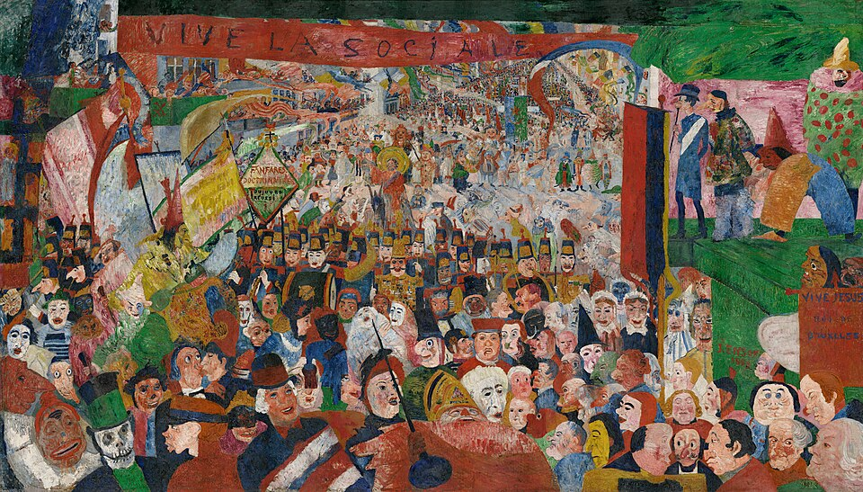
画像を拡大 ＋《1889年のキリストのブリュッセル入城》
- 作者
- ジェームズ・アンソール
- 制作時期
- 1888年
- 所在地・所蔵
- J・ポール・ゲティ美術館、ロサンゼルス（87.PA.96）
- 素材・形式
- 油彩・カンヴァス
- 原題
- Christ’s Entry into Brussels in 1889
出典・画像について

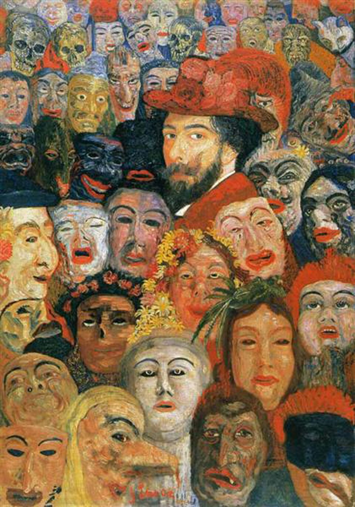
画像を拡大 ＋《仮面の中の自画像》
- 作者
- ジェームズ・アンソール
- 制作時期
- 1899年
- 所在地・所蔵
- メナード美術館、小牧（117×82cm）
- 素材・形式
- 油彩・カンヴァス
- 原題
- Self Portrait with Masks
出典・画像について
ゴッホへの罵倒とアンリ・ド・グルーの退会
動画 23:11～レアリスムの先駆者シャルル・ド・グルーの息子、アンリ・ド・グルーも騒動を起こしました。1890年、ゴッホの作品の展示に際し、無価値な塗りたくりにすぎないと罵倒します。同じく招待されていたゴッホの友人ロートレックは激怒し、結果的にド・グルーの退会で決着しました。多様な表現を受け入れるはずの集団が、その限界に突き当たった出来事です。
解散と後継団体
解散とラ・リーブル・エステティーク
動画 23:53～1883年に発足し、翌1884年から毎年展覧会を開いたレ・ヴァンは、1893年の第10回展を最後に解散しました。対立を抱えながらも、新しい芸術潮流を発展させ、ベルギーだけでなく、西洋の前衛芸術に大きな影響を与えた集団でした。活動の絶頂期にあったにもかかわらず、設立者モースが解散を提案します。10年の節目に、活動が習慣化してマンネリに陥ることを懸念したためです。内部対立に疲れた面もあったのかもしれません。
翌1894年、モースはラ・リーブル・エステティークを設立しました。レ・ヴァンを引き継ぎつつ、その反省を踏まえて運営を変えます。会員制度を設けず、出品者はすべて、その年にモースが招くゲストとしました。芸術家が固定した集団を作ると、芸術観の違いから対立するため、毎年その都度招く仕組みへ替えたのです。ただし、主催者のえこひいきが生まれ得るという問題も残ります。
活動は、第一次世界大戦でドイツ軍にベルギーが占領される1914年まで続きました。第1回展にはゴーギャンも招かれ、パリで十分に評価されていなかった作品が紹介されます。芸術の都パリでも、前衛的すぎて理解されない作品の受け皿となる側面がありました。
画像を拡大 ＋
《マナオ・トゥパパウ（死霊が見ている）》
- 作者
- ポール・ゴーギャン
- 制作時期
- 1892年
- 所在地・所蔵
- バッファローAKG美術館（1965:1）
- 素材・形式
- 油彩・カンヴァス
- 原題
- Manaò tupapaú
出典・画像について
前衛芸術の発信地へ
動画 25:44～ベルギーはフランスを追う立場から、新しい芸術の発信地へと変わっていきました。レ・ヴァンは、内部の対立もあり、すべてが成功した集団とはいえないかもしれません。それでも活動はモデルとなり、アカデミーの保守性に反発する運動が各地へ広がりました。その先に、セセッション、すなわち分離派の動きも位置付けられます。
要点まとめ
- レ・ヴァンは1883年にブリュッセルで結成され、国際的な前衛芸術を紹介する独立展覧会を開いた。
- ベルギー美術はフランドルの油彩、ルーベンスのアントワープを経て、外国の統治と文化政策の影響を受けた。
- 独立後も政治や買い手の保守性、亡命したダヴィッドらの影響から、アカデミスムが強く残った。
- クールベの作品は若手に衝撃を与え、レアリスムや自由美術協会の活動につながった。
- 自由を掲げるレソールもアンソールの作品を拒絶し、それへの反発が無審査の場を求めるレ・ヴァンを生んだ。
- モースやピカールの支援を受け、共通様式に縛られない20人の画家たちが活動した。
- 外国の作家も積極的に迎えたが、点描への批判やゴッホへの罵倒など、内部の対立も起きた。
- 1893年の解散後、モースは固定会員を持たず毎年招待するラ・リーブル・エステティークへ運営を改めた。
- 対立を含むその実験は、ベルギーを前衛芸術の発信地にし、分離派などの運動へつながるモデルとなった。
確認問題
答えを考えてから開いてください。選択問題は選ぶとすぐ正誤と解説が出ます（選択肢の順番は開くたびに変わります）。各問題のリンクから該当の章や作品カードへ戻れます。
選択問題：0／4問回答・正解0
A. 一問一答答えを考えてから開く
問1レ・ヴァンの名称は何人のメンバーに由来するか。
答えを見る
問2レ・ヴァンの設立と展覧会の運営を支えた弁護士・美術評論家は誰か。
答えを見る
問3レソールへの反発を生んだ、アンソールの拒絶された作品は何か。
答えを見る
B. 4択選ぶとすぐ正誤と解説
問4ベルギーの若い画家に衝撃を与えた《石割人夫》の特徴はどれか。
→ 本文で確認（クールベの衝撃とベルギーのレアリスム）
問5レ・ヴァンの画家たちに共通した特徴として正しいものはどれか。
→ 本文で確認（様式を統一しない国際的な展覧会）
問6後継のラ・リーブル・エステティークの運営はどれか。
→ 本文で確認（解散とラ・リーブル・エステティーク）
C. 図版問題画像を見て答える
問7この少女像の作者は誰か。
→ 作品カードで確認
問8この作品の題名の年と、制作年を答えよ。